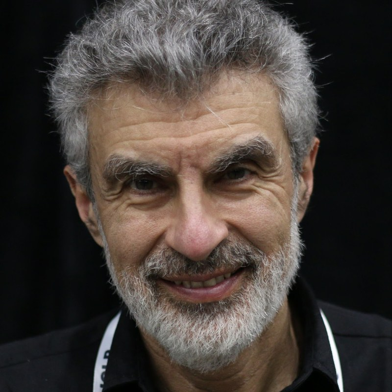
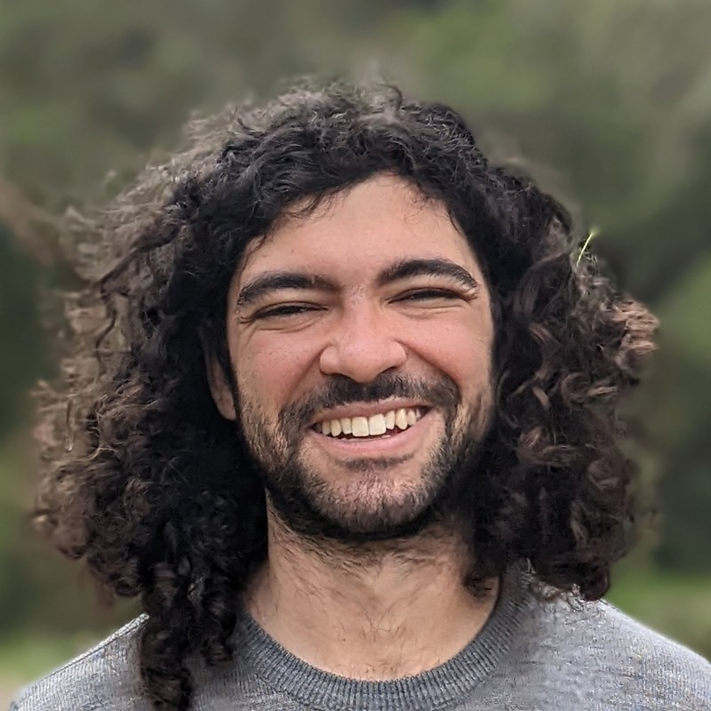
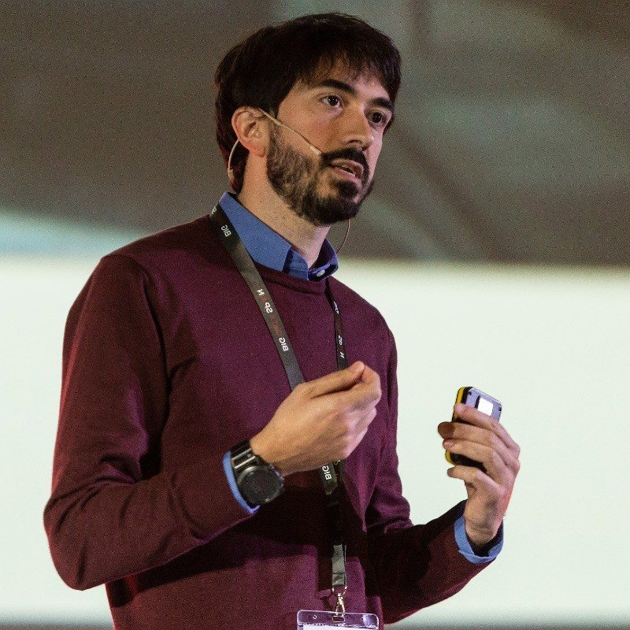
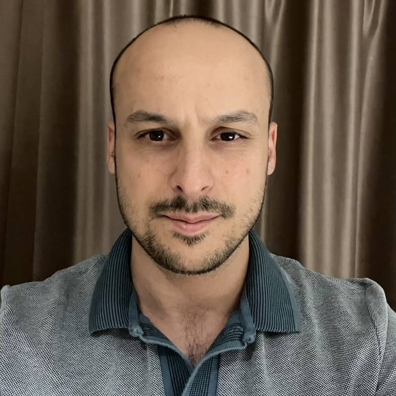
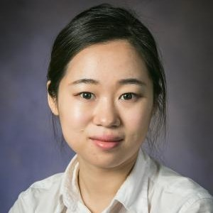

Abhinandan Pal (Obi)
General Chair
University of Birmingham
Proposed Workshop (Subject to Acceptance)
CERtification, Trust, and Assurance in INtelligent Systems.
Beyond benchmarks, toward systems we can be certain of.
NeurIPS 2026 Sydney, Australia Date TBA
Students submit non-archival two-page abstracts, present posters, and compete for awards and Student Award Talk slots. The format welcomes early work and gives oral presenters senior mentoring.
Up to eight leaders from academic labs and industry teams give three-minute pitches on their research vision, current priorities, and the collaborators they seek, including PhD, postdoctoral, internship, and full-time roles.
Small groups discuss open problems, possible directions, and opportunities for collaboration. Invited speakers and senior researchers circulate among groups of about five, making it easy for everyone to contribute.
Leading researchers connect deep learning, model checking, theorem proving, AI verification, safety-critical AI, and automated reasoning through keynotes, invited talks, and an AMA.

Université de Montréal
LawZero, Mila
Yoshua Bengio is Professor of Computer Science at Université de Montréal, Founder and Scientific Advisor of Mila, and Co-President and Scientific Director of LawZero. He is one of the pioneers of deep learning and received the 2018 A.M. Turing Award, alongside Geoffrey Hinton and Yann LeCun, for foundational contributions to the field. His recent work has focused on AI safety, trustworthy systems, and the social impact of advanced AI.
(Ask Me Anything Session)
Amazon
Leonardo de Moura is a Senior Principal Applied Scientist in the Automated Reasoning Group at AWS. In his spare time, he serves as Chief Architect of the Lean FRO, a non-profit he co-founded with Sebastian Ullrich. He also serves on the Lean FRO Board of Directors. Before joining AWS in 2023, he spent 17 years in the RiSE group at Microsoft Research, where he was a Senior Principal Researcher from 2006. Before that, he was a Computer Scientist at SRI International. His research areas are automated reasoning, theorem proving, decision procedures, SAT, and SMT. He is the main architect of several automated reasoning tools: Lean, Z3, Yices 1.0, and SAL. His work in automated reasoning has been recognized with the CAV, Haifa, and Herbrand awards, as well as the ACM Programming Languages Software Award. His work has also been covered by the New York Times and popular science magazines including Wired, Quanta, and Nature News.
University of Oxford
Marta Kwiatkowska is Professor of Computing Systems and Fellow of Trinity College, University of Oxford. She is known for fundamental contributions to the theory and practice of model checking for probabilistic systems and is currently focusing on safety and robustness of automated decision-making in Artificial Intelligence. She led the development of the PRISM model checker (www.prismmodelchecker.org), which has been adopted in diverse fields, including wireless networks, security, robotics, healthcare, and DNA computing, with genuine flaws found and corrected in real-world protocols. Kwiatkowska won two ERC Advance Grants, the Royal Society Milner Award, the BCS Lovelace Medal, and the Van Wijngaarden Award and received an honorary doctorate from KTH Royal Institute of Technology in Stockholm. She is a Fellow of the Royal Society, ACM, Academia Europea and American Academy of Arts and Sciences.
Axiom Math
Shubho Sengupta has spent over a decade working in deep learning, at Baidu Silicon Valley AI Lab and Meta AI. His work has covered speech recognition, text-to-speech, large-scale reinforcement learning for Go, and the scaling of deep learning systems. More recently, he has focused on using large language models to build automated software systems. He is currently CTO of Axiom Math, where he is building a self-improving AI reasoner, beginning with an AI mathematician.

Harvard
University of Michigan
Gabriel Poesia is an incoming Assistant Professor at the University of Michigan, a current Research Fellow at Harvard University's Kempner Institute, and a recent PhD graduate of Stanford University. He works on building self-improving AI systems that are capable of formal reasoning and open-ended discovery.

MathWorks
Lucas Garcia is Senior Principal Product Manager for AI at MathWorks, with more than 20 years of experience in machine learning and the software industry. He works with customer-facing and development teams to define and launch new AI capabilities, and is an active member of the EUROCAE WG-114/SAE G-34 working group developing the ARP6983 standard for aircraft systems that use AI. He holds a PhD in applied mathematics from the Complutense University of Madrid and Polytechnic University of Madrid, and his research focuses on neural approaches to combinatorial optimization.

University of Birmingham
Zeroth Research
Mirco Giacobbe is an Associate Professor at the University of Birmingham. He received his PhD from IST Austria and held research positions at the University of Oxford and the Bruno Kessler Foundation. He develops automated techniques for verifying the safety and security of algorithmic systems by combining machine learning with automated reasoning. He founded the International Symposium on AI Verification (SAIV) and Zeroth Research, a non-profit focused on technical AI safety.

MIT
Chuchu Fan is an Associate Professor at MIT. She was previously a postdoctoral researcher at Caltech and received her PhD from the University of Illinois at Urbana-Champaign. She earned her bachelor's degree from Tsinghua University. Her group, Realm at MIT, develops computational tools that combine rigorous mathematics with machine learning and AI for the design, analysis, and verification of safe, large-scale systems. She has received an NSF CAREER Award, AFOSR and ONR YIP Awards, an RSS Outstanding Student Paper Award, and the 2020 ACM Doctoral Dissertation Award.
| Name | Affiliation |
|---|---|
| Ajinkya Naik | IIT Bombay |
| Alexander Pluska | TU Wien |
| Anagha Athavale | TU Wien |
| Aniruddha Joshi | UC Berkeley |
| Avaljot Singh | University of Illinois Urbana-Champaign |
| Chenxi Ji | University of Illinois Urbana-Champaign |
| Daneshvar Amrollahi | Stanford University |
| Duo Zhou | University of Illinois Urbana-Champaign |
| Eline M. Bovy | Radboud University |
| Hai Duong | George Mason University |
| Hanna Lachnitt | Stanford University |
| Haoyu Li | University of Illinois Urbana-Champaign |
| John Zhengyang Lu | University of Waterloo |
| Liqiang Shang | University of Bristol |
| Mohamed Ghanem | CISPA Helmholtz Center for Information Security & Technical University of Munich |
| Nianyun Song | University of Bristol & Beijing Normal University |
| Niklas Metzger | CISPA Helmholtz Center for Information Security |
| Omar Adalat | Imperial College London |
| Peiyang Song | Carnegie Mellon University & California Institute of Technology |
| Shuyi Lin | Northeastern University |
| Stefan Pranger | Graz University of Technology |
| Takashi Suwa | Kyoto University & Imiron |
| Tsai Yun Chen | National Institute of Informatics |
| Wietze Koops | Lund University & University of Copenhagen |
| Xiangru Zhong | University of Illinois Urbana-Champaign |
| Yuning Wang | Rutgers University-New Brunswick |
| Yuxin Lin | Peking University |